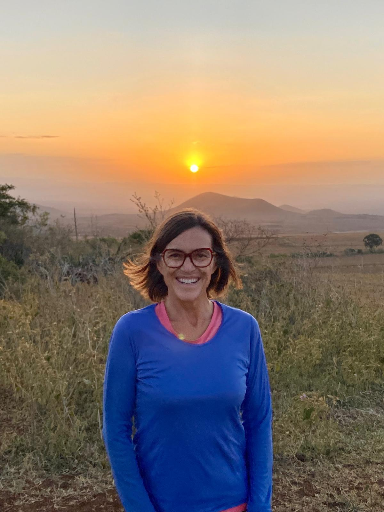

Notre Conseil d'Administration Estimé
Bienvenue dans la section Conseil d'Administration de notre site web. Ici, nous vous présentons fièrement les professionnels dévoués qui guident notre organisation avec leur expertise et leur vision. Le Conseil d'Administration joue un rôle crucial dans l'orientation de nos efforts vers le développement durable du tourisme en Tanzanie, en veillant à ce que nous respections les normes les plus élevées d'intégrité, d'innovation et d'engagement communautaire.
RUBEN (Pays-Bas)
Jeunes Années et Passion pour la Nature
 Je suis né et j'ai grandi dans la pittoresque campagne des Pays-Bas, où dès mon jeune âge, ma fascination
pour la nature et la faune a été éveillée. En grandissant au milieu de paysages verdoyants et d'écosystèmes
vibrants, j'ai développé une profonde appréciation pour le monde naturel et un fort sens de la
responsabilité environnementale.
Je suis né et j'ai grandi dans la pittoresque campagne des Pays-Bas, où dès mon jeune âge, ma fascination
pour la nature et la faune a été éveillée. En grandissant au milieu de paysages verdoyants et d'écosystèmes
vibrants, j'ai développé une profonde appréciation pour le monde naturel et un fort sens de la
responsabilité environnementale.
Animé par ma passion pour la nature, j'ai poursuivi un diplôme en sciences de l'environnement dans une université réputée d'Amsterdam. Au cours de mes études, j'ai activement participé à divers projets de conservation et expéditions de recherche sur le terrain à travers l'Europe, acquérant une expérience pratique en surveillance de la biodiversité et en restauration d'habitats.
Découverte de la Tanzanie et Entrée dans le TourismeAprès avoir obtenu mon diplôme, j'ai entrepris un voyage transformateur en Tanzanie, attiré par sa biodiversité riche et son patrimoine culturel unique. C'est ici que j'ai trouvé ma vocation dans l'écotourisme et le voyage durable. Captivé par les paysages diversifiés de la Tanzanie, des plaines du Serengeti aux sommets enneigés du Kilimandjaro, j'ai décidé d'en faire ma deuxième maison.
Rejoindre Signature SafarisRejoindre Signature Safaris a marqué un tournant dans ma carrière. En tant qu'entreprise dédiée à la promotion du tourisme responsable et à la mise en valeur des merveilles naturelles de la Tanzanie, j'ai trouvé un parfait alignement avec mes valeurs et aspirations. J'ai été inspiré par l'engagement de Signature Safaris envers la qualité de service, la conservation de l'environnement et l'engagement communautaire.
Rôle et ResponsabilitésDans mon rôle en tant que représentant de Signature Safaris en Tanzanie, j'ai le privilège de connecter les voyageurs du monde entier avec des expériences de safari inoubliables. Je supervise les opérations, garantissant une logistique sans faille, des itinéraires personnalisés et un service client exceptionnel. Mon objectif est de créer des connexions significatives entre les visiteurs et la faune et les paysages remarquables de la Tanzanie, tout en promouvant des pratiques de tourisme durable.
Impact et Aspirations FuturesMon parcours avec Signature Safaris n'est pas seulement une profession mais une mission personnelle de contribuer positivement à l'industrie du tourisme en Tanzanie. Je m'efforce de sensibiliser davantage aux efforts de conservation, de soutenir les communautés locales et d'améliorer l'expérience globale des visiteurs. En regardant vers l'avenir, je suis déterminé à étendre notre portée, à forger de nouveaux partenariats et à faire évoluer continuellement nos offres pour dépasser les attentes de nos clients et respecter notre engagement envers le tourisme responsable.
Josée Clermont (Canada)
 Bonjour, je suis Josée, une aventurière canadienne et éducatrice avec une passion pour découvrir le monde à vélo. J'ai parcouru plus de 50 000 km dans 29 pays, sur cinq continents, en solo et sans assistance ! J'ai découvert la Tanzanie lorsque je suis venue pour la première fois en 2020 pour gravir le Kilimandjaro, et je suis tombée amoureuse du pays. Je suis retournée en Afrique pour faire du vélo de l'Afrique du Sud à l'Ouganda, passant deux mois en Tanzanie. J'ai une expérience antérieure dans la planification et la direction de voyages en Amérique du Sud et en Tanzanie. Ancienne directrice exécutive du Collège nordique francophone, j'ai une maîtrise en linguistique et je parle couramment le français, l'anglais et l'espagnol. Je me consacre maintenant à partager ma passion pour la découverte du monde à vélo. Rejoignez-moi maintenant et réalisez votre rêve !